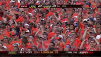
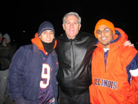
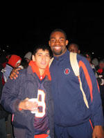
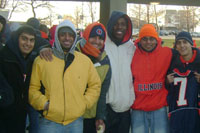

Illinois Football 2007
The 2007 Illinois fooball was a remarkable success. The 3 previous years that I had sat through were very painful, and while I still always wanted to watch the games, they often weren't even broadcast. Not to mention I couldn't find a single person who actually wanted to go to the games and watch them lose 90% of the time. I will admit that I actually went to some of the games by myself (when ECE didn't intervene, but that's another story).
Fortunately for me, the 2007 season kept me on the edge of my toes, as I would spend all week eagerly anticipating the next game (and the impending dominance of Arrelious Benn). As you can see, I even made my way onto the ESPN broadcast of the Wisconsin game wearing my trusty Arrelious Benn jersey (as the only blue shirt in a crowd of orange, I almost stood out more than Arvind, the 'black' guy on my left).
In anticipation of the Rose Bowl, we even stayed out all night in freezing weather to secure tickets (which we later sold for no profit because no one was able to go), however the 12 hours spent in a negative wind chill outside of Assembly Hall were not without some sort of prize. At about 10pm, Ron Zook made his way over to the line of about 100 of us, where we got a picture with him. As you can tell by my heavy winter gear, it was already really, really cold. I only opened my jacket for these pictures to show off my jersey.
Later on, at about 11pm, superstars Vontae Davis and Arrelious Benn showed up with coffee (which still tastes pretty nasty, but I was freezing and it was luke-warm). While my excitement was going into overdrive, I was aghast with myself for not bringing a sharpie to get my jersey autographed. However, I did get a picture with him. Infact, not only did I ask to take a picture after Arrelious was done pouring coffee, he approached me afterwards to take it (probably recognizing me as the one guy on facebook with Arrelious Benn as one of my interests.
I ended up going to bed sometime around 1am I believe. Thankfully we picked up a tent to block the wind, but there was no way we had enough clothes and blankets. By 4am I had woken up again with chills, nausea, and stomach pain. By the time the line started moving to get tickets I was fighting terrible illness that would keep me from attending class the rest of the day. However, not to be left out, Juice was walking around the line. By now I had brought my Juice jersey and a sharpie, and went up to him and got an autograph and picture.
{kind=link}
While the season ended on somewhat of a low note against USC, Illinois showed they belong on that stage (well, at least for 2.5 quarters). I eagerly await year 2 of the Arrelious Benn era, especially if Comcast decides to carry the Big 10 Network, and actually allows me to watch the games.